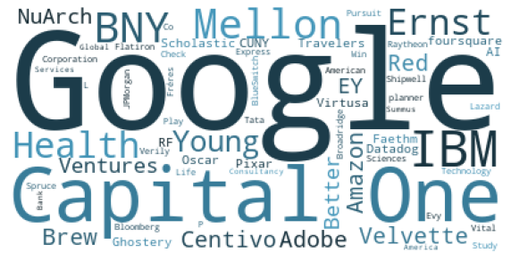

CUNY Tech Prep 2021 Alumni Survey¶
Data Exploration and Visualizations¶
import pandas as pd
import numpy as np
import seaborn as sns
import re
import matplotlib.dates as mdates
import matplotlib.pyplot as plt
from IPython.display import Image
from wordcloud import WordCloud
pd.set_option('display.max_rows', 5)
plt.rcParams['figure.figsize'] = (10,10)
---------------------------------------------------------------------------
ModuleNotFoundError Traceback (most recent call last)
/tmp/ipykernel_1780/478763807.py in <module>
----> 1 import pandas as pd
2 import numpy as np
3 import seaborn as sns
4 import re
5 import matplotlib.dates as mdates
ModuleNotFoundError: No module named 'pandas'
First things first… load the data¶
df = pd.read_csv('data/data_masked.csv', sep=',')
Lets look at the description and information about our dataset¶
df.columns
Index(['Timestamp',
'CUNY, Undergrad Graduation Date (ex: City Tech, Fall 2018) ',
'CUNY Tech Prep Graduation Year ',
'What best describes you, right now? ',
'Has the COVID-19 pandemic affected your employment status?',
'CTP is creating an Alumni Directory that would include name, CUNY alma mater, email address, LinkedIn URL, and current job title & company— would you be open to CTP including your information in the Directory?',
'If you are an undergraduate student, where (college name) and what are you studying? ',
'If you are a graduate student, where do you attend (college name) and what are you studying? ',
'Are you working in a tech role in New York? ',
'If you're NOT working in New York, what state are you working in? ',
'What's the name of the company where you work? ',
'Are you working full-time or part-time?', 'What is your title? ',
'Reflect on when you received a job offer for either your current tech position or the first tech position you took after graduating from CUNY Tech Prep (whatever came first). Did you receive the offer within 3 months of completing CTP? ',
'Are you working in a tech role in New York? .1',
'If you're NOT working in New York, what state are you working in? .1',
'What's the name of the company where you work? .1',
'What is your title? .1',
'Reflect on when you received an internship offer for either your current tech position or the first tech position you took after graduating from CUNY Tech Prep (whatever came first). Did you receive the offer within 3 months of completing CTP? ',
'What company made you an internship offer? ',
'What resources could CUNY Tech Prep provide to best help you in your search? ',
'Based on your experience at CUNY Tech Prep, what would you change about the program?',
'What would you keep the same about the program?',
'There are many volunteer opportunities available at CUNY Tech Prep. Check off any of the following that you'd be willing to participate in: ',
'What did you take away from your time with CTP?',
'Did your internship become a full time job?'],
dtype='object')
df.isnull().sum()
Timestamp 0
CUNY, Undergrad Graduation Date (ex: City Tech, Fall 2018) 0
..
What did you take away from your time with CTP? 20
Did your internship become a full time job? 67
Length: 26, dtype: int64
df.duplicated().sum()
0
Meta/Info Columns¶
time = df.columns[0]
under_grad = df.columns[1]
ctp_grad= df.columns[2]
describe_you = df.columns[3]
alumni_directory = df.columns[5]
tech_role_nyc = df.columns[8]
company = df.columns[10]
title = df.columns[12]
first_job = df.columns[13]
resources_needed = df.columns[20]
volunteer_opportunities = df.columns[23]
# Convert To Number
df['datetime'] = pd.to_datetime(df[time],infer_datetime_format=True).apply(lambda x: x.value)
Companies / Job Info¶
print(df.groupby(company)[company].agg(['count']).sort_values(ascending=False,by="count"))
print(df[company].value_counts(normalize=True).head(5))
df[company].value_counts().plot.pie()
count
What's the name of the company where you work?
Google 4
IBM 3
... ...
Flatiron Health 1
foursquare 1
[43 rows x 1 columns]
Google 0.08
IBM 0.06
Capital One 0.06
Adobe 0.02
American Express 0.02
Name: What's the name of the company where you work? , dtype: float64
<AxesSubplot:ylabel="What's the name of the company where you work? ">
Working in New York Tech Companies¶
condition = df[tech_role_nyc]=="Yes"
tech_companies = df[ condition ]
print(tech_companies[company].value_counts(normalize=True).head(5))
tech_companies[company].value_counts().plot.pie()
Google 0.090909
Adobe 0.030303
Scholastic Corporation 0.030303
Summus Global 0.030303
Flatiron Health 0.030303
Name: What's the name of the company where you work? , dtype: float64
<AxesSubplot:ylabel="What's the name of the company where you work? ">
# df_company = df[ df[company].str.strip() != np.nan]
# display(df_company[company].value_counts().keys())
# text = df_company[company].values
tuples = [x for x in df[company].values if str(x) != 'nan']
wordcloud = WordCloud(background_color='white',max_font_size = 150).generate(', '.join(tuples))
def grey_color_func(word, font_size, position,orientation,random_state=None, **kwargs):
return("hsl(198,46%%, %d%%)" % np.random.randint(10,51))
wordcloud.recolor(color_func = grey_color_func)
plt.imshow(wordcloud)
plt.axis('off')
plt.savefig("word_cloud.png", bbox_inches='tight')

Job/Company Titles¶
print(tech_companies[title].value_counts().head(5))
tech_companies[title].value_counts().plot.pie(fontsize=0,labeldistance=None)
plt.axis('off')
plt.savefig("jobs.png", bbox_inches='tight')
Software Engineer 7
Associate Software Engineer 3
Devops Engineer 1
Client Onboarding Data Analyst 1
Technical Consultant 1
Name: What is your title? , dtype: int64
The Fastest Company To Respond¶
plt.figure(figsize=(12,12))
sns.boxplot(x='datetime',y=company, data=df)
<AxesSubplot:xlabel='datetime', ylabel="What's the name of the company where you work? ">
CTP Cohort And School Info¶
print(df[ ctp_grad ].value_counts())
df[ ctp_grad ].value_counts().plot.pie()
Fall 2019 - Spring 2020 (Cohort 5) 34
Fall 2018 - Spring 2019 (Cohort 4) 14
Fall 2017 - Spring 2018 (Cohort 3) 12
Fall 2016 - Spring 2017 (Cohort 2) 7
Name: CUNY Tech Prep Graduation Year , dtype: int64
<AxesSubplot:ylabel='CUNY Tech Prep Graduation Year '>
df[under_grad].value_counts().plot.pie()
<AxesSubplot:ylabel='CUNY, Undergrad Graduation Date (ex: City Tech, Fall 2018) '>
Fastest School/Class To Respond¶
plt.figure(figsize=(12,12))
sns.boxplot(x='datetime',y=under_grad, data=df)
<AxesSubplot:xlabel='datetime', ylabel='CUNY, Undergrad Graduation Date (ex: City Tech, Fall 2018) '>
Fastest Cohort To Respond¶
plt.figure(figsize=(12,12))
sns.boxplot(x='datetime',y=ctp_grad, data=df)
<AxesSubplot:xlabel='datetime', ylabel='CUNY Tech Prep Graduation Year '>
Voluenteer Interest / Resources Needed¶
There are many volunteer opportunities available at CUNY Tech Prep. Check off any of the following that you’d be willing to participate in:¶
pd.set_option('display.max_rows', None)
display(df.groupby([volunteer_opportunities,company])[company].agg(['count']))
m = df[volunteer_opportunities].str.contains('Conducting Mock Technical Interviews',na=False)
df2 = df[m].reset_index(drop=True)
display(df2[company].value_counts())
df2['count'] = df.groupby(company)[company].transform('count')
#df['count'] = df.groupby(volunteer_opportunities)[volunteer_opportunities].transform('count')
ax = sns.barplot(y='count', x=company,
data=df2, dodge=False)
| count | ||
|---|---|---|
| There are many volunteer opportunities available at CUNY Tech Prep. Check off any of the following that you'd be willing to participate in: | What's the name of the company where you work? | |
| Conducting Mock Technical Interviews | Amazon | 1 |
| Bloomberg L.P. | 1 | |
| Centivo | 1 | |
| Datadog | 1 | |
| Vital Check | 1 | |
| Conducting Mock Technical Interviews, Guest Lecturing Technical and/or Professional Development Topics, Taking part in Q&A panel(s) on your experience in the tech sector | Virtusa | 1 |
| Conducting Mock Technical Interviews, Screening applicants for future cohorts of CUNY Tech Prep | Bank of America | 1 |
| Capital One | 2 | |
| Ernst and Young | 1 | |
| IBM | 1 | |
| Summus Global | 1 | |
| Travelers | 1 | |
| Conducting Mock Technical Interviews, Screening applicants for future cohorts of CUNY Tech Prep, Guest Lecturing Technical and/or Professional Development Topics, Taking part in Q&A panel(s) on your experience in the tech sector | Shipwell | 1 |
| Conducting Mock Technical Interviews, Screening applicants for future cohorts of CUNY Tech Prep, Mentoring one (or more) CUNY Tech Prep Project Team(s) | Ghostery | 1 |
| Conducting Mock Technical Interviews, Screening applicants for future cohorts of CUNY Tech Prep, Mentoring one (or more) CUNY Tech Prep Project Team(s), Guest Lecturing Technical and/or Professional Development Topics, Taking part in Q&A panel(s) on your experience in the tech sector | 1 | |
| IBM | 1 | |
| JPMorgan | 1 | |
| Conducting Mock Technical Interviews, Screening applicants for future cohorts of CUNY Tech Prep, Mentoring one (or more) CUNY Tech Prep Project Team(s), Taking part in Q&A panel(s) on your experience in the tech sector | IBM | 1 |
| Conducting Mock Technical Interviews, Screening applicants for future cohorts of CUNY Tech Prep, Taking part in Q&A panel(s) on your experience in the tech sector | Better.com | 1 |
| Guest Lecturing Technical and/or Professional Development Topics, Taking part in Q&A panel(s) on your experience in the tech sector | American Express | 1 |
| Capital one | 1 | |
| EY | 1 | |
| Faethm AI | 1 | |
| foursquare | 1 | |
| Mentoring one (or more) CUNY Tech Prep Project Team(s), Guest Lecturing Technical and/or Professional Development Topics, Taking part in Q&A panel(s) on your experience in the tech sector | NuArch | 1 |
| Screening applicants for future cohorts of CUNY Tech Prep, Guest Lecturing Technical and/or Professional Development Topics, Taking part in Q&A panel(s) on your experience in the tech sector | Adobe | 1 |
| Screening applicants for future cohorts of CUNY Tech Prep, Taking part in Q&A panel(s) on your experience in the tech sector | Red Ventures | 1 |
| Tata Consultancy Services | 1 | |
| Taking part in Q&A panel(s) on your experience in the tech sector | Pixar | 1 |
IBM 3
Capital One 2
Centivo 1
Bloomberg L.P. 1
Summus Global 1
JPMorgan 1
Shipwell 1
Ernst and Young 1
Vital Check 1
Travelers 1
Datadog 1
Virtusa 1
Google 1
Ghostery 1
Better.com 1
Amazon 1
Bank of America 1
Name: What's the name of the company where you work? , dtype: int64
What resources could CUNY Tech Prep provide to best help you in your search?¶
df['count'] = df.groupby(company)[company].transform('count')
sns.histplot(df[df['count']>0],
bins=5,
x="datetime", stat="count", hue=company,palette ="CMRmap_r",multiple="stack",legend=False)
plt.axis('off')
plt.savefig("intreset_overtime.png", bbox_inches='tight')
voluenteer_intrest = df[df['count']>0]
voluenteer_intrest[volunteer_opportunities].value_counts().plot.pie()
| What's the name of the company where you work? | count | |
|---|---|---|
| 1 | Adobe | 1.0 |
| 2 | Centivo | 1.0 |
| 4 | IBM | 3.0 |
| 6 | Amazon | 1.0 |
| 7 | Capital one | 1.0 |
| 9 | Velvette Brew | 1.0 |
| 10 | Red Ventures | 1.0 |
| 11 | EY | 1.0 |
| 12 | Better.com | 1.0 |
| 13 | BNY Mellon | 1.0 |
| 14 | NuArch | 1.0 |
| 15 | foursquare | 1.0 |
| 16 | Ghostery | 1.0 |
| 18 | CUNY RF | 1.0 |
| 20 | Pixar | 1.0 |
| 21 | BNY Mellon | 1.0 |
| 22 | Capital One | 3.0 |
| 23 | 4.0 | |
| 24 | Virtusa | 1.0 |
| 25 | 4.0 | |
| 28 | Travelers | 1.0 |
| 29 | Faethm AI | 1.0 |
| 30 | Datadog | 1.0 |
| 31 | Capital One | 3.0 |
| 32 | Capital One | 3.0 |
| 34 | Oscar Health | 1.0 |
| 35 | Ernst & Young | 1.0 |
| 37 | Scholastic Corporation | 1.0 |
| 39 | Bloomberg L.P. | 1.0 |
| 41 | Pursuit / Evy planner | 1.0 |
| 42 | Lazard Fréres & Co | 1.0 |
| 43 | 4.0 | |
| 44 | Vital Check | 1.0 |
| 45 | Ernst and Young | 1.0 |
| 46 | Shipwell | 1.0 |
| 48 | IBM | 3.0 |
| 49 | JPMorgan | 1.0 |
| 50 | IBM | 3.0 |
| 51 | American Express | 1.0 |
| 53 | 4.0 | |
| 55 | BlueSwitch | 1.0 |
| 56 | Spruce Technology | 1.0 |
| 57 | Play Study Win | 1.0 |
| 58 | Raytheon | 1.0 |
| 59 | Broadridge | 1.0 |
| 60 | Flatiron Health | 1.0 |
| 61 | Verily Life Sciences | 1.0 |
| 63 | Tata Consultancy Services | 1.0 |
| 64 | Summus Global | 1.0 |
| 65 | Bank of America | 1.0 |
<AxesSubplot:xlabel='datetime', ylabel="There are many volunteer opportunities available at CUNY Tech Prep. Check off any of the following that you'd be willing to participate in: ">
df = df.copy()
fig, ax = plt.subplots()
size = 0.3
vals = np.array([[60., 32.], [37., 40.], [29., 10.]])
cmap = plt.get_cmap("tab20c")
outer_colors = cmap(np.arange(3)*4)
inner_colors = cmap(np.array([1, 2, 5, 6, 9, 10]))
display(voluenteer_intrest[volunteer_opportunities].value_counts(normalize=True))
#ax.pie(voluenteer_intrest[volunteer_opportunities].value_counts(), radius=1, colors=outer_colors, autopct='%1.1f%%',
# wedgeprops=dict(width=size, edgecolor='w'),labels=[""] * len(voluenteer_intrest[volunteer_opportunities].value_counts()))
display(voluenteer_intrest[company].value_counts(normalize=True))
# ax.pie(voluenteer_intrest[company].value_counts(), radius=1-size, colors=inner_colors, autopct='%1.1f%%',
# wedgeprops=dict(width=size, edgecolor='w'),labels=[""] * len(voluenteer_intrest[company].value_counts()))
ax.pie(voluenteer_intrest[company].value_counts(), radius=1, colors=outer_colors,
wedgeprops=dict(width=size, edgecolor='w'))
ax.pie(voluenteer_intrest[volunteer_opportunities].value_counts(), radius=1-size, colors=inner_colors,
wedgeprops=dict(width=size, edgecolor='w'))
ax.set(aspect="equal")
plt.savefig("volunteer_opportunities_company.png", bbox_inches='tight')
plt.show()
plt.show()
plt.close()
Conducting Mock Technical Interviews, Screening applicants for future cohorts of CUNY Tech Prep 0.233333
Conducting Mock Technical Interviews 0.166667
Guest Lecturing Technical and/or Professional Development Topics, Taking part in Q&A panel(s) on your experience in the tech sector 0.166667
Conducting Mock Technical Interviews, Screening applicants for future cohorts of CUNY Tech Prep, Mentoring one (or more) CUNY Tech Prep Project Team(s), Guest Lecturing Technical and/or Professional Development Topics, Taking part in Q&A panel(s) on your experience in the tech sector 0.100000
Screening applicants for future cohorts of CUNY Tech Prep, Taking part in Q&A panel(s) on your experience in the tech sector 0.066667
Screening applicants for future cohorts of CUNY Tech Prep, Guest Lecturing Technical and/or Professional Development Topics, Taking part in Q&A panel(s) on your experience in the tech sector 0.033333
Conducting Mock Technical Interviews, Screening applicants for future cohorts of CUNY Tech Prep, Taking part in Q&A panel(s) on your experience in the tech sector 0.033333
Mentoring one (or more) CUNY Tech Prep Project Team(s), Guest Lecturing Technical and/or Professional Development Topics, Taking part in Q&A panel(s) on your experience in the tech sector 0.033333
Conducting Mock Technical Interviews, Screening applicants for future cohorts of CUNY Tech Prep, Mentoring one (or more) CUNY Tech Prep Project Team(s) 0.033333
Taking part in Q&A panel(s) on your experience in the tech sector 0.033333
Conducting Mock Technical Interviews, Guest Lecturing Technical and/or Professional Development Topics, Taking part in Q&A panel(s) on your experience in the tech sector 0.033333
Conducting Mock Technical Interviews, Screening applicants for future cohorts of CUNY Tech Prep, Guest Lecturing Technical and/or Professional Development Topics, Taking part in Q&A panel(s) on your experience in the tech sector 0.033333
Conducting Mock Technical Interviews, Screening applicants for future cohorts of CUNY Tech Prep, Mentoring one (or more) CUNY Tech Prep Project Team(s), Taking part in Q&A panel(s) on your experience in the tech sector 0.033333
Name: There are many volunteer opportunities available at CUNY Tech Prep. Check off any of the following that you'd be willing to participate in: , dtype: float64
Google 0.08
IBM 0.06
Capital One 0.06
Adobe 0.02
American Express 0.02
Bloomberg L.P. 0.02
Pursuit / Evy planner 0.02
Lazard Fréres & Co 0.02
Vital Check 0.02
Ernst and Young 0.02
Shipwell 0.02
JPMorgan 0.02
BlueSwitch 0.02
Ernst & Young 0.02
Spruce Technology 0.02
Play Study Win 0.02
Raytheon 0.02
Broadridge 0.02
Flatiron Health 0.02
Verily Life Sciences 0.02
Tata Consultancy Services 0.02
Summus Global 0.02
Scholastic Corporation 0.02
Datadog 0.02
Oscar Health 0.02
NuArch 0.02
Amazon 0.02
Capital one 0.02
Velvette Brew 0.02
Red Ventures 0.02
EY 0.02
Better.com 0.02
BNY Mellon 0.02
foursquare 0.02
Centivo 0.02
Ghostery 0.02
CUNY RF 0.02
Pixar 0.02
BNY Mellon 0.02
Virtusa 0.02
Travelers 0.02
Faethm AI 0.02
Bank of America 0.02
Name: What's the name of the company where you work? , dtype: float64
df.groupby([ctp_grad,resources_needed], sort=True)[ctp_grad].agg(['count'])
| count | ||
|---|---|---|
| CUNY Tech Prep Graduation Year | What resources could CUNY Tech Prep provide to best help you in your search? | |
| Fall 2016 - Spring 2017 (Cohort 2) | Resume review, Cover letter review, LinkedIn profile review, Networking events (TTP, alumni, etc.) | 1 |
| Resume review, Networking events (TTP, alumni, etc.), Alumni Slack network | 1 | |
| Fall 2017 - Spring 2018 (Cohort 3) | Networking events (TTP, alumni, etc.) | 1 |
| Fall 2018 - Spring 2019 (Cohort 4) | Networking events (TTP, alumni, etc.), Alumni Slack network | 2 |
| Resume review, LinkedIn profile review, Behavioral interview prep, Networking events (TTP, alumni, etc.) | 1 | |
| Fall 2019 - Spring 2020 (Cohort 5) | At the moment, not much. I have utilized their resources to the fullest extent thus far. | 1 |
| Hard to say. I've literally received nothing back. | 1 | |
| LinkedIn profile review, Behavioral interview prep, Networking events (TTP, alumni, etc.), Alumni Slack network | 1 | |
| Networking events (TTP, alumni, etc.), Alumni Slack network | 1 | |
| Networking events (TTP, alumni, etc.), Alumni Slack network, Mock technical interviews | 1 | |
| Resume review, Behavioral interview prep | 1 | |
| Resume review, Behavioral interview prep, Networking events (TTP, alumni, etc.) | 1 | |
| Resume review, Behavioral interview prep, Networking events (TTP, alumni, etc.), Alumni Slack network | 1 | |
| Resume review, Behavioral interview prep, practice interviews with alums | 1 | |
| Resume review, Cover letter review, LinkedIn profile review, Behavioral interview prep, Networking events (TTP, alumni, etc.), Alumni Slack network | 6 | |
| Resume review, Cover letter review, LinkedIn profile review, Behavioral interview prep, Networking events (TTP, alumni, etc.), Alumni Slack network, Frankly, CTP has done a lot for me already. Personally, I simply need to build some projects to improve my confidence in my abilities to work as an SD. | 1 | |
| Resume review, Cover letter review, LinkedIn profile review, Behavioral interview prep, Networking events (TTP, alumni, etc.), Alumni Slack network, Technical Interview Prep | 1 | |
| Resume review, LinkedIn profile review | 1 | |
| Resume review, LinkedIn profile review, Behavioral interview prep, Networking events (TTP, alumni, etc.) | 1 | |
| Resume review, LinkedIn profile review, Behavioral interview prep, Networking events (TTP, alumni, etc.), Alumni Slack network | 1 | |
| Resume review, LinkedIn profile review, Behavioral interview prep, Regular Tech Interview | 1 |
df[resources_needed].value_counts().plot.barh()
<AxesSubplot:>
Where are CTP Alumni Now?¶
df[describe_you].value_counts()
df[describe_you].value_counts().plot.pie()
<AxesSubplot:ylabel='What best describes you, right now? '>
What best describes you, right now?¶
pd.set_option('display.max_rows', None)
df.groupby([describe_you,ctp_grad])[ctp_grad].agg(['count'])
| count | ||
|---|---|---|
| What best describes you, right now? | CUNY Tech Prep Graduation Year | |
| Employee (full-time or part time) | Fall 2016 - Spring 2017 (Cohort 2) | 6 |
| Fall 2017 - Spring 2018 (Cohort 3) | 12 | |
| Fall 2018 - Spring 2019 (Cohort 4) | 13 | |
| Fall 2019 - Spring 2020 (Cohort 5) | 16 | |
| Graduate student | Fall 2019 - Spring 2020 (Cohort 5) | 1 |
| Graduated, looking for a tech job | Fall 2016 - Spring 2017 (Cohort 2) | 1 |
| Fall 2019 - Spring 2020 (Cohort 5) | 8 | |
| Intern (full-time or part-time) | Fall 2019 - Spring 2020 (Cohort 5) | 1 |
| Undergraduate student | Fall 2018 - Spring 2019 (Cohort 4) | 1 |
| Fall 2019 - Spring 2020 (Cohort 5) | 8 |